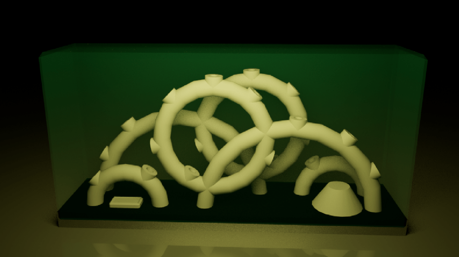

Conceptual Hydroponics
The focus of this design project was to create a self sustaining grow system using hydroponic methods. Over the month-long design sprint, I aimed to emphasize the ease and minimal maintenance in order to bring gardening and growing for produce back into the average household. From drip pumps to kratky to terrarium style ecosystem balance, I attempted to employ various methods of engaging the plants and users either as a viewable art form, a functional space saver, or a table centerpiece.
View ProjectPlant Music

PlantWave makes an audio synthesizer which converts the naturally occuring changes in a plant's electromagnetic pulses into sound. Within design constrainsts, I composed a techno track to compliment various plants' natural noises. To go with it, audioreactive visuals meant to highlight the beauty and mysticality of plants.
Download Video3D Modeling

This is a collection of 3D modeling and Animation projects. The topics range from brand redesigns to character models and environments.
View Project